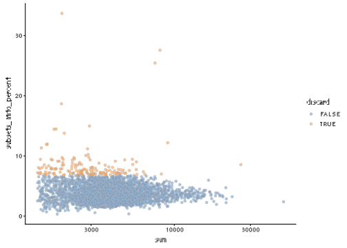
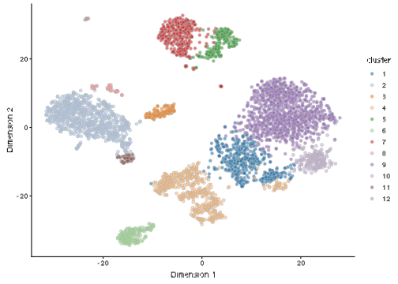

Chapter 26 PBMC 4k 10X dataset (filtered)
26.1 Introduction
This performs an analysis of the public PBMC 4k dataset generated by 10X Genomics (Zheng et al. 2017), starting from the filtered count matrix.
26.2 Analysis code
26.2.1 Data loading
26.2.2 Quality control
26.2.3 Normalization
26.2.4 Variance modelling
26.2.5 Dimensionality reduction
# Using randomized SVD, which is more efficient for file-backed matrices.
set.seed(10000)
pbmc4k <- runPCA(pbmc4k, subset_row=chosen.hvgs, ncomponents=25,
BSPARAM=BiocSingular::RandomParam())
set.seed(100000)
pbmc4k <- runTSNE(pbmc4k, dimred="PCA")
set.seed(1000000)
pbmc4k <- runUMAP(pbmc4k, dimred="PCA")26.3 Results
26.3.1 Quality control statistics
colData(unfiltered) <- cbind(colData(unfiltered), stats)
unfiltered$discard <- high.mito
gridExtra::grid.arrange(
plotColData(unfiltered, y="sum", colour_by="discard") +
scale_y_log10() + ggtitle("Total count"),
plotColData(unfiltered, y="detected", colour_by="discard") +
scale_y_log10() + ggtitle("Detected features"),
plotColData(unfiltered, y="subsets_Mito_percent",
colour_by="discard") + ggtitle("Mito percent"),
ncol=2
)

## Mode FALSE TRUE
## logical 4182 15826.3.2 Normalization
## Min. 1st Qu. Median Mean 3rd Qu. Max.
## 0.32 0.71 0.89 1.00 1.13 11.0326.3.3 Variance modelling
plot(dec4k$mean, dec4k$total, pch=16, cex=0.5,
xlab="Mean of log-expression", ylab="Variance of log-expression")
curfit <- metadata(dec4k)
curve(curfit$trend(x), col='dodgerblue', add=TRUE, lwd=2)
26.3.4 Clustering
##
## 1 2 3 4 5 6 7 8 9 10 11 12
## 492 796 127 567 226 187 388 49 1036 201 77 36
References
Bibliography
Zheng, G. X., J. M. Terry, P. Belgrader, P. Ryvkin, Z. W. Bent, R. Wilson, S. B. Ziraldo, et al. 2017. “Massively parallel digital transcriptional profiling of single cells.” Nat Commun 8 (January):14049.